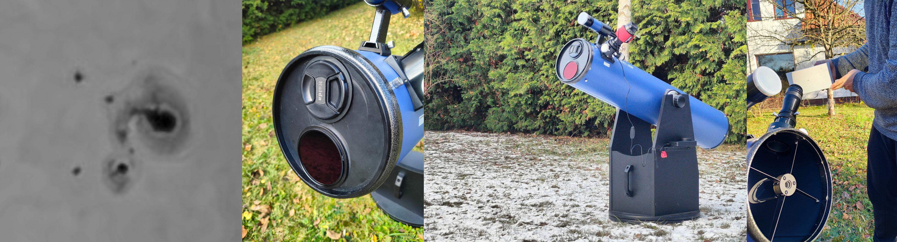
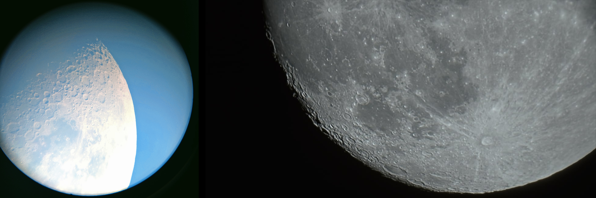

There is a sticker on my telescope that reads: "WARNING! Do not look at the sun with this telescope!" so naturally that's exactly what I did... Using some DIY filter of course :)
Astrophotography is not my strong-suit. That being said, I tried to capture what can be seen through my DIY sun filter. My impatient attempt on sun imaging can be seen in the first picture on the left where you can admire the sunspot group no. 3477. The photo was taken by Olympus M4/3 camera through a 2x barlow on an 8" 1200mm Dobsonian. The aperture was limited by the filter to 95mm. The photo appears just about third of the real resolving power of human (my) eyeball due to my mad astrophotography skills (and quite noticeable high cloud coverage combined with low sun elevation). The visual observation was far more rewarding. After combining the sun filter with additional O-III 7nm filter the penumbral filaments were clearly distinguishable, the faculae and of course the sunspots were easily identifiable. There were some limb darkening but the granulation was barely noticeable (then again due to bad conditions). The eyepiece used was an APM XWA 7.5mm 110° apparent FOV Which I highly recommend, but for sun observation I would go with the 9mm or faster to fit whole sun disc in FOV.
Right next to the sunspot group you can see the modified dust cover to act as an aperture mask with an option to screw in photographic filters or further aperture reduction. The glass filter used in this case is a "nisi solar filter pro nano uv/ir cut nd100000 16.6 stops". There is a noticeable but ignorable ghosting due to slight misalignment of the filter. The ghosting is not visible when polarising or O-III filter is used (to dark). Proper review of the filter will be posted when any good observation conditions will happen (which can be in a few months given the current trend...).
The last photo in this picture shows a solar projection through an eyepiece. This is highly dangerous both for the telescope as for the user but provides a really amazing and bright view.
This is a photo of the moon (obviously) taken by my phone (left)_ and by DLSR (right). This comparison clearly illustrates my struggle with astrophotography.
Afterword: The solar filter dust cover is a good idea but the ease of taking it out poses a danger. Even a brief exposure can be a catastrophy for an eye. The modification that will be done in a few moments will assure that the cap stays on :)